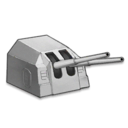
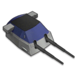
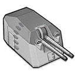
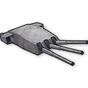
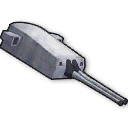
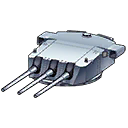
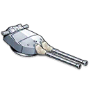

Standard Guns
- 
- Slang Term: Tbtsk
- Proper Name: Twin 150mm (TbtsK C/36)
- Origin of the Name: It's got “tbtsk” in the name of the gun itself.
- Description: The best armor-piercing, non-priority light cruiser gun.
- 
- Slang Term: Eugen Gun
- Proper Name: Twin 203mm (SK C/34)
- Origin of the Name: It's used in real life on KMS Prinz Eugen.
- Descripton: A good armor-piercing heavy cruiser gun.
- 
- Slang Term: Breadgun
- Proper Name: Twin 128mm (SK C/41)
- Origin of the Name: It looks like a loaf of bread.
- Descripton: A destroyer gun used to kill fireboats on high-firepower battleships that cannot hold light cruiser guns.
- 
- Slang Term: Littorio Gun
- Proper Name: Triple 381mm (Model 1934)
- Origin of the Name: It's used in real life on RN Littorio.
- Descripton: A niche gun from the italian event. Littorio has a skill that references this gun.
- 
- Slang Term: Zara Gun
- Proper Name: Twin 203mm (Model 1927)
- Origin of the Name: It's used in real life on RN Zara.
- Descripton: An SAP gun from the italian event. It's very strong against medium armor.
Priority Guns
- 
- Slang Term: Sanrui Gun, Saint Louis Gun, Triple 203 MLE
- Proper Name: Triple 203mm (Mle 1934 Prototype)
- Origin of the Name: It's used in-game on FNFF Saint Louis, who is also known as Sanrui.
- Descripton: The best high-explosive heavy cruiser gun.
- 
- Slang Term: Hood Gun
- Proper Name: Twin 381mm (BL 15" Mk II)
- Origin of the Name: It's used in-game on HMS Hood.
- Descripton: A very fast battleship gun used for barrage-focused battleships.